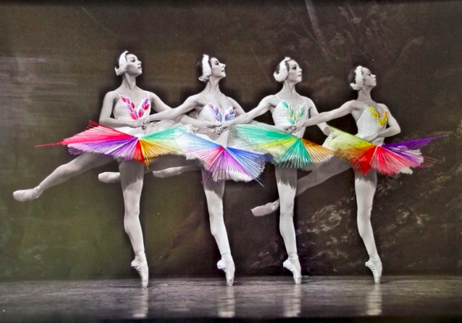

Cross Stitch as an Art
Written By: Morgan Watkins
For more information please contact me at morganewatkins@yahoo.com
Modern cross stitch is more than a domestic skill your grandmother practices in her free time. It is an art form that requires time, patience, practice, and a great deal of talent. Today, artists have taken the craft to a level beyond the traditional scope of cross stitch, reaching heights that were previously beyond the realm of possibility.
| Severija Incirauskaite-Kriauneviviene |
Incirauskaite-Kriauneviviene is a Lithuanian based artists who cross stitches on unconventional medium. She sews on car hoods, metal buckets, doors, fences, etc. The hard, rusty edges of metal medium juxtaposed with the soothing, cozy appeal of stitched craftwork make for a very beautiful and unique art style. . She does not try to use contrasting thread on her medium. Rather, she attempts to extenuate the beauty of the item she is cross stitching by blending the thread seamlessly with the material (Fulleylove).Image Source: https://theinspirationgrid.com/embroidered-objects-by-severija-incirauskaite-kriauneviciene/ |
 |
| Danielle Clough |
Clough is based out of Cape Town. She draws inspiration from nature and pop culture to bring her projects to life. She is well known for her What a Racket series in which she cross stitched and embroidered several old tennis rackets. Image Source: https://www.danielleclough.com/portfolio-item/what-a-racket/ |
 |
| Jose Romussi |
Romussi is a self-taught Chilean artist. To extenuate the beauty and grace of the human form, he embroiders black and white photographs with bold, bright thread to create eye-popping, energetic patterns. Romussi enjoys giving people a peek into what might lie beyond the image captured in a photograph, extrapolating and giving the audience more than what they see with the naked eye. He “interrupts the norm” of artistry and “redefines notions of beauty while simultaneously drawing attention to social issues” (Goldberg; Yellow Owl). Image Source: https://www.ignant.com/2012/06/29/jose-romussi/ |
 |
Many embroidery artists are, in fact, self taught and have all but perfected the art of cross stitch. If you would like to learn how to cross stitch for yourself, click HERE.
Works Cited
- Barwick, Connie G. “What Is Fabric Count in Cross-Stitching?” The Spruce Crafts, 16 Oct. 2019, www.thesprucecrafts.com/cross-stitch-fabric-count-meaning-983891.
- Blakeley, Deborah. “Severija Inčirauskaitė-Kriaunevičienė Textile Artist - Vilnius, Lithuania.” ZoneOne Arts, 2 Oct. 2016, zoneonearts.com.au/severija-incirauskaite-kriauneviciene/.
- Caterpillar Cross Stitch. “HOW TO FINISH CROSS STITCH ORNAMENTS, CUSHIONS AND WALL HANGINGS.” Caterpillar Cross Stitch, 14 July 2020, www.caterpillarcrossstitch.com/blogs/blog/how-to-finish-cross-stitch-ornaments-cushions-wall-hangings.
- Clough , Danielle. “What A Racket.” Danielle Clough, www.danielleclough.com/portfolio-item/what-a-racket/.
- “Cross Stitch Christmas Ornaments.” Benzie Design, www.benziedesign.com/products/cross-stitch-christmas-ornaments.
- Cross Stitch Fabrics 101. 3 Sept. 2015, www.herrschners.com/topic/cross-stitch+fabrics+101.do.
- “Dimensions® Counted Cross Stitch Kit, Elephant.” Michaels, www.michaels.com/dimensions-counted-cross-stitch-kit-elephant/10509947.html.
- “Embroidered Objects by Severija Incirauskaite-Kriauneviciene: Inspiration Grid.” Daily Design Inspiration for Creatives | Inspiration Grid, 31 Mar. 2017, theinspirationgrid.com/embroidered-objects-by-severija-incirauskaite-kriauneviciene/.
- Fitzgerald, Susan. A Beginner's Guide to Cross Stitch. 19 Apr. 2017, stitchedmodern.com/blogs/news/a-beginners-guide-to-cross-stitch.
- Fitzgerald, Susan. “How to Frame Cross Stitch and Embroidery Using Sticky Board.” Stitched Modern, Stitched Modern, 15 June 2018, stitchedmodern.com/blogs/news/how-to-frame-cross-stitch-and-embroidery-using-sticky-board.
- Fulleylove, Rebecca. Severija Incirauskaite-Kriauneviciene. 16 Oct. 2011, www.dontpaniconline.com/magazine/arts/sevrija-incirauskaite-kriauneviciene.
- Goldberg, Roxanne. “Jose Romussi's Embroidered Photographs Play with Culture and Beauty.” Jose Romussi’s Embroidered Photographs Play with Culture and Beauty, 4 Sept. 2015, hifructose.com/2015/08/25/jose-romussis-embroidered-photographs-play-with-culture-and-beauty/.
- Gretsch, Sarah. “BLINK // Jose Romussi, Dancing Strings.” Berlin Art Link, 14 May 2018, www.berlinartlink.com/2013/05/10/blink-jose-romussi-dancing-strings/.
- “Jose Romussi.” IGNANT, 12 Aug. 2020, www.ignant.com/2012/06/29/jose-romussi/.
- Mari, Selaru. “Gobelin Tapestry Finished Cross Stitch Vintage Needlepoint.” Etsy, www.etsy.com/ie/listing/733554893/gobelin-tapestry-finished-cross-stitch.
- Samara, et al. “A Definitive History of Cross Stitch.” Lord Libidan, lordlibidan.com/the-history-of-cross-stitch/.
- Verso, Jo. “Threads of History.” Threads of History by Jo Verso | Cross Stitch Basics - Stitchers' Study - The Cross Stitch Guild, www.thecrossstitchguild.com/cross-stitch-basics/stitchers-study/threads-of-history-by-jo-verso.aspx.
- White, Sarah. “Wear Cross Stitch on Your Clothes.” Cross, 26 June 2017, cross-stitch.craftgossip.com/wear-cross-stitch-on-your-clothes/2017/06/30/.
- Woodward, Daisy. “The Art of Embroidery.” AnOther, AnOther Magazine, 3 Sept. 2015, www.anothermag.com/art-photography/7735/the-art-of-embroidery.
- Workshop, Yellow Owl, et al. “19 Artists Creatively Pushing the Boundaries of Embroidery.” My Modern Met, 25 Apr. 2018, mymodernmet.com/embroidery-artists/.